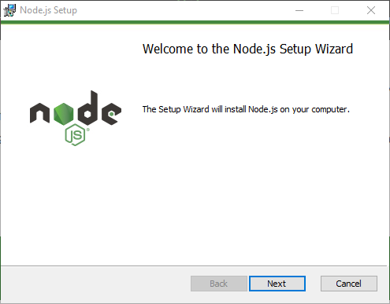
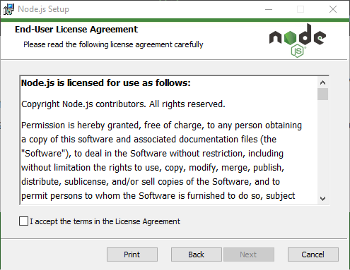
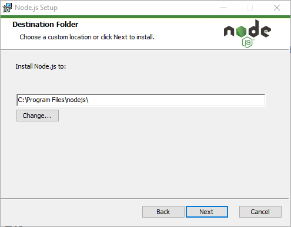
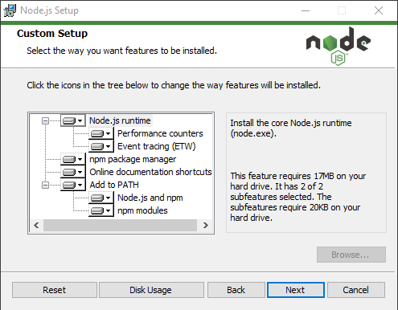
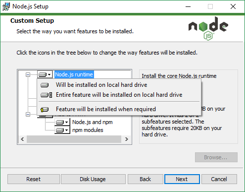
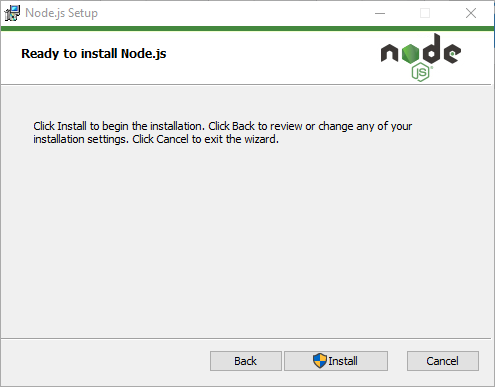

NodeJS
Introducción
NodeJS, tal y como nos explica su página web, es un entorno de ejecución para JavaScript construido con el motor JavaScript V8 de Chrome. NodeJS es un modelo de operaciones E/S sin bloqueo y orientado a eventos que lo hace liviano y eficiente.
Es de código abierto y fue creado con el enfoque de ser útil en la creación de programas de red altamente escalables. La principal novedad que aportó NodeJS es que JavaScript siempre había sido un lenguaje orientado al navegador, sin embargo, gracias a NodeJS, es posible la ejecución de JavaScript desde el lado del servidor con un gran rendimiento, debido entre otras cosas a la facilidad para ejecutar operaciones de forma asíncrona.
NodeJS está disponible para numerosas plataformas entre ellas Linux, Windows y Mac. En este tutorial nos centraremos en la instalación de NodeJS para Windows mediante el instalador.
Instalación
Para comenzar la instalación de NodeJS accedemos al sitio de descarga de NodeJS. Como se mencionó anteriormente en este tutorial se tratará la instalación mediante el instalador para Windows por lo que descargamos el Windows Installer de la versión recomendada LTS. Cuando la descarga haya finalizado seguimos los siguientes pasos para completar la instalación.
Ejecutamos el instalador descargado

Aceptamos los términos del contrato de licencia

Elegimos la ruta de instalación para NodeJS

En la siguiente ventana que aparece nos permite personalizar algunos aspectos de la instalación

Si hacemos click sobre ellos podremos observar en la zona de la derecha una explicación y el espacio que ocupará en disco cada una de estas caracteristicas. Gracias a un menú desplegable podemos elegir si queremos o no que sean instaladas o si preferimos que sean añadidas cuando se requiera.

Para finalizar simplemente seleccionamos la opción Install y se llevará a cabo la instalación de NodeJS en nuestra máquina
